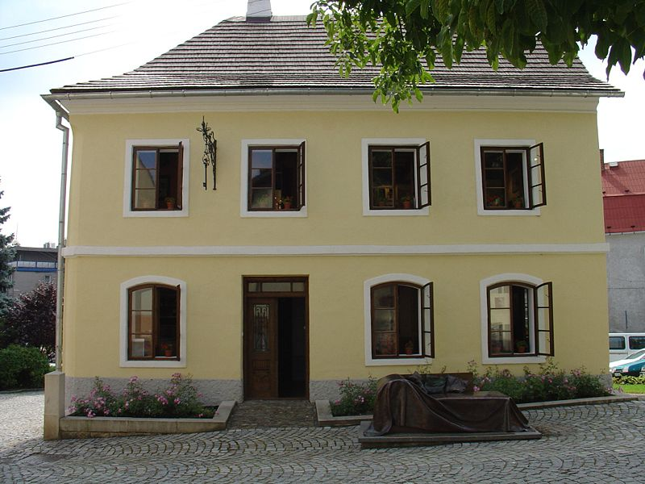
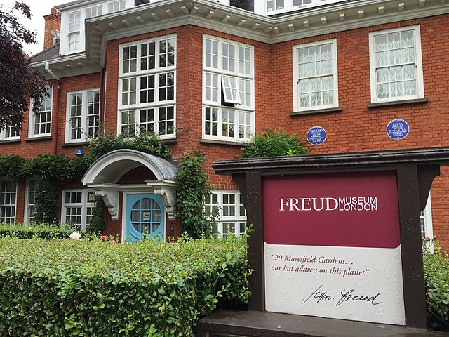

Obras completas
Museos

Museo de Příbor
Casa natal de Sigmund Freud, preservada para alojar el museo de su vida y obra.
Visita el sitio oficial
Museo de Viena
Edificio donde se encontró el departamento y la clinica del Dr. Freud. Alberga ahora el Museo, la biblioteca y el archivo del psicoanálisis.
Visita el sitio oficial

Museo de Londres
Última casa deL Dr. Freud, conserva su estudio como parte del museo. Se realizan investigaciones y tiene un servicio educativo.
Visita el sitio oficialDesarrolo de su obra
- I. Publicaciones prepsicoanalíticas y manuscritos inéditos en vida de Freud
- II.Estudios sobre la histeria
- III. Primeras publicaciones psicoanalíticas
- IV. La interpretación de los sueños (I)
- V. La interpretación de los sueños (II) y Sobre el sueño
- VI. Psicopatología de la vida cotidiana
- VII. Tres ensayos de teoría sexual, y otras obras, «Fragmento de análisis de un caso de histeria» (Caso «Dora»)
- VIII. El chiste y su relación con lo inconsciente
- IX. El delirio y los sueños en la «Gradiva» de W. Jensen, y otras obras
- X. «Análisis de la fobia de un niño de cinco años» y «A propósito de un caso de neurosis obsesiva»
- XI. Cinco conferencias sobre Psicoanálisis, Un recuerdo infantil de Leonardo da Vinci, y otras obras
- XII. Trabajos sobre técnica psicoanalítica, y otras obras, «Sobre un caso de paranoia descrito autobio-gráficamente (Caso Schreber)
- XIII. Tótem y tabú, y otras obras
- XIV. Trabajos sobre metapsicología, y otras obras, «Contribución a la historia del movimiento psicoanalítico»
- XV. Conferencias de introducción al psicoanálisis (Partes I y II)
- XVI. Conferencias de introducción al psicoanálisis (Parte III)
- XVIII. Más allá del principio de placer, Psicología de las masas y análisis del yo, y otras obras
- XXIV. Índices y bibliografías